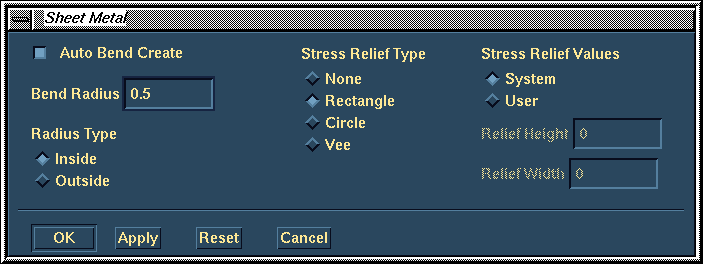
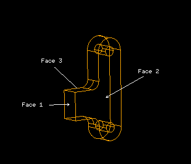
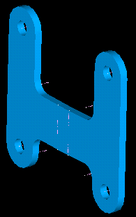

(Demonstrator 1)
| Next Step | Return to Table of Contents | Previous Step |
Manage Bins
Select Get from Library
Select Check out button
OK
Back in the Manage Bins form Select Link
Get Link to workbench
Dismiss

Fillet the two edges as shown (R=4)


Select the Sheet Metal icon
Select the Link part
NOTE:- If you are running as a single user you will need to get the part to the workbench.
Select M.S. 2.5MM THCK
OK

Bend Radius = 0.5mmSelect the three
surfaces on the Link as shown

accept the thickening direction

Select the Shell icon
Select the Link part
OK

Double Click on a bend centerlineAccept
(MMB)Model Unfold

Update the unfolded Link

Double Click on a bend centerline
Accept (MMB)
Model Fold
Update the folded Link

Check in the Link to the library (Keep to Modify)
Select the Link part
OK
Done
| Next Step | Return to Table of Contents | Previous Step |